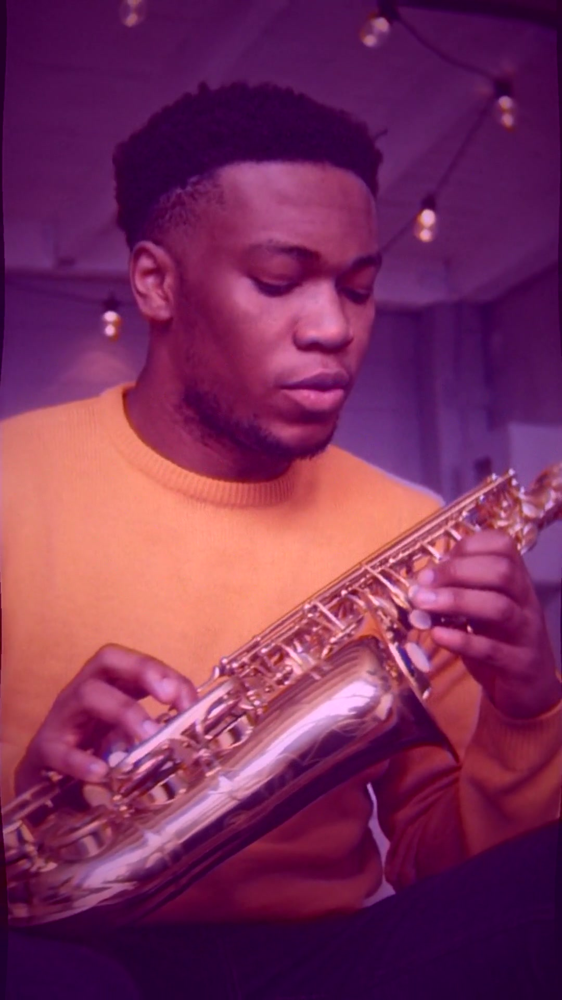
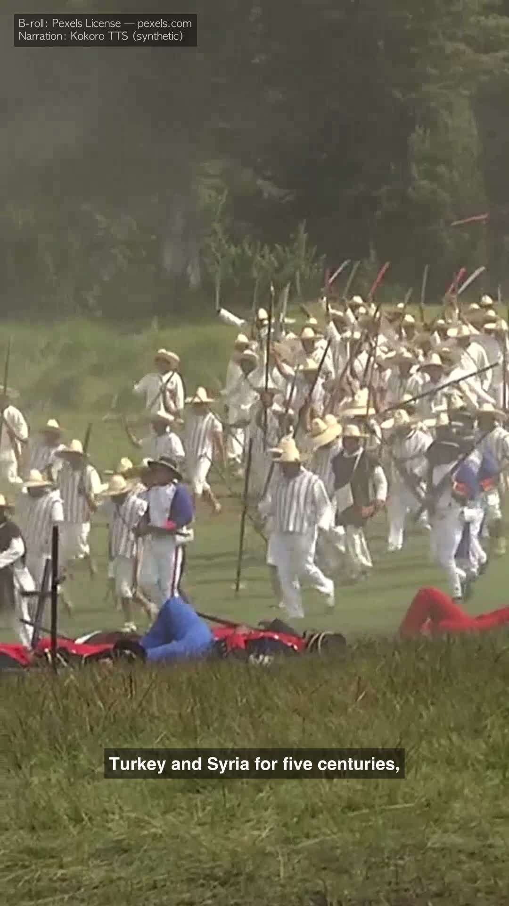
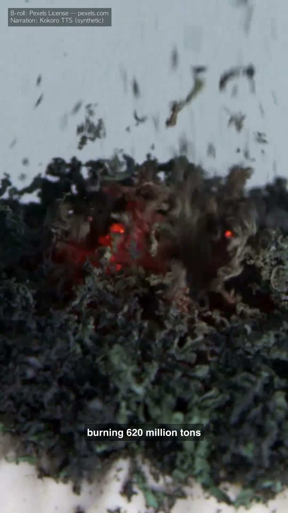
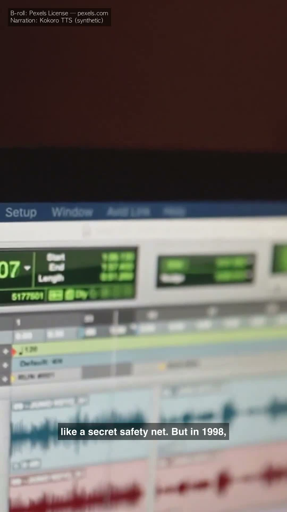
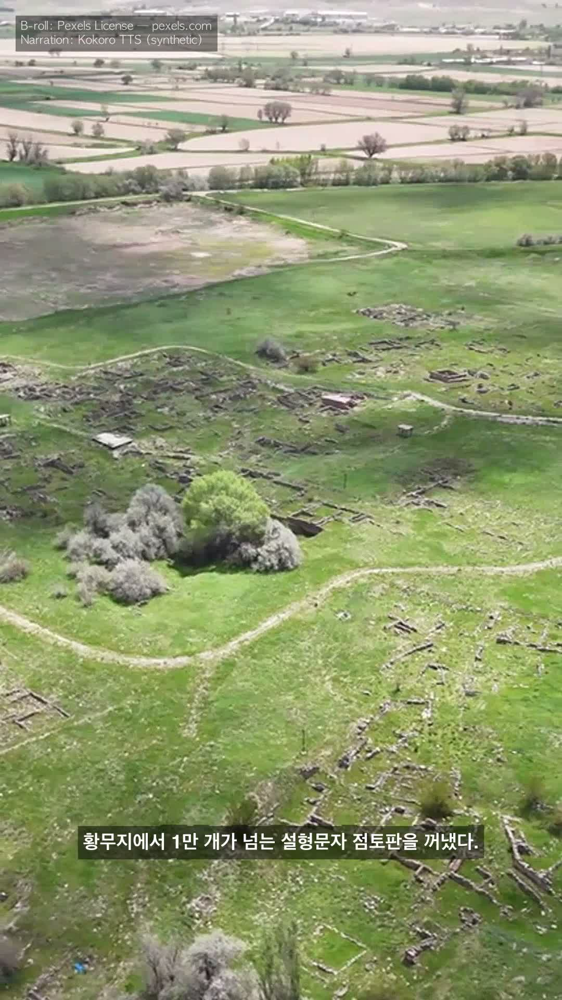

Two portable skills. One repo. music-video shorts · Korean job-board digest · $0 runtime · EN + KO
Skill #1 (music-video): a music track becomes a 9:16 vertical short — phrase-aware cuts, variable-speed mood pacing, onset-aligned glitch micro-edits, vintage lo-fi shaders.
Skill #2 (job-hunt): a single seed keyword like "Problem Solver" expands to the full family of equivalent titles (FDE / Applied AI Engineer / Generalist / …) and produces a deduplicated digest of matching Korean job postings.
Mechanical stages stay local (aubio, whisper.cpp, ffmpeg, jq). Creative stages opt into Claude (Tier-1) — covered by the operator's existing subscription, no incremental USD. The system audits itself on every commit.
5-second slice of the first uploaded music-video short — Suno-generated lo-fi jazz track, B-roll from Pexels, render + shader pass by local ffmpeg.
91+mission outputs
23ffmpeg shaders
0runtime API tokens
3audit layers (L1+L2+L3)
5mission types
2portable skills (agentskills.io)
EN+KOdual track from day 1
MITlicense
How it works
The scaffold is general-purpose. Short-form video is the v1 mission domain — chosen because the deliverable is visually verifiable and the failure modes are quick to catch. Current focus is the music-video mission (music-as-sole-audio, beat-aligned cuts, onset-aligned glitch micro-edits, vintage lo-fi shaders) — operator-validated as the production format after eight narration-driven trials. The earlier faceless-short mission (narration-driven) and the v1 highlight / shorts-batch missions remain in the tree as alternate paths.
Pipeline (music-video mission)
Beat extraction.aubiotrack finds real beats; sub-beat noise rejected. Cuts land every Nth beat (default 12 — about one cut per 7.5 s at 95 BPM).
Phrase alignment.aubioonset detects drum hits. Variable per-clip setpts by mood: slow scenes 0.55×, ambient 0.70×, active 0.80×, natural 1.00× — the music drives the visual pace.
B-roll. Mood-keyword Pexels Videos API fetch; per-window selection. Demo mode bundles CC-BY Blender open-movie clips for zero-key first-touch.
Glitch micro-edits. 0.2 s reverse + 0.2 s forward jump-cut on detected drum onsets, but only on clips classified as static-camera so the frame doesn't shake during the glitch.
Vintage lo-fi shaders. Film grain + vignette + Gaussian zoom-pulse + phrase-aware pond ripple + halation bloom. All pure ffmpeg filter graphs — no GLSL, no external renderer.
Render + QA. ffmpeg 9:16 screen-fill, mission-level retry on failure.
Three-layer reactive audit
L1 — post-commit hook. Drift-risk commits (anything under agents/, .claude/agents/, config/, CLAUDE.md, the operator contract) fire audit-run.sh contract within ~30 s.
L2 — 15-min mission-anomaly poll. New blocker files or QA-FAIL bursts trigger a focused audit. No-op (zero tokens) when nothing's wrong.
L3 — daily 03:00 baseline. launchd fires the full sweep. Catches anything L1 + L2 missed.
The pattern is Reactor + Hook (files as events), not Observer — subagents in this repo aren't long-running observables.
Cost-routing rule
The architectural lesson from a real failure: applying "Tier 2 (local) = default" to every pipeline stage produces a quality ceiling.
Mechanical, high-volume stages (transcribe, render, fetch, beat-detect) — local. Token cost would be ruinous at scale.
One-shot creative stages (script hook, factual framing, mood-keyword extraction) — Claude. ~500 tokens per call, operationally negligible against the existing subscription quota, and quality compounds over the next 60 seconds of viewing.
Pipelines are packaged as portable Skills following the open agentskills.io standard. Two skills ship as of v0.4.0:
Skill #1 (music-video, missions-routed) and
Skill #2 (job-hunt, standalone).
A skill written once can target multiple compatible runtimes (Claude Code, Cursor, Goose, Gemini CLI, OpenAI Codex, etc.) — Skill #1 verified via a 12/12 Hermes drop-in interop test.
A separate-shape skill: standalone (no missions-routed pipeline), v2 short-keyword UX, agentskills.io-compliant. Pass --seed "Problem Solver" and the orchestrator expands to a 24-synonym role family (Forward Deployed Engineer / Applied AI Engineer / Generalist / Founding Engineer / …) before fetching from KR job boards (사람인 / 잡코리아 / 원티드 / 프로그래머스). 4 enrichment utilities (fit-score / cover-letter / company-research / interview-prep) ship as scaffolds, each gated behind a single env-flag flip.
11 source plugins (7 live-ready, 2 key-gated, 2 permanent-mock) — all mock-fallback by default; live HTTP per-plugin behind JH_SOURCE_LIVE=1. Catalogued in skills/job-hunt/config/activation.tsv and surfaced via scripts/status.sh.
5 enrichment utilities — per-posting Claude calls behind JH_TOOL_LIVE=1.
70 tests — smoke + edge-case + JSON-schema validation. EN + KO walkthroughs.
The earlier faceless-short mission still lives in the tree. Topic prompt in, narrated 60-second short out: Sonnet drafts the hook + factual framing, Kokoro-ONNX (English) or macOS Yuna (Korean) synthesizes voice, whisper.cpp transcribes for caption timing, Pexels B-roll selected per-window from caption keywords, ffmpeg burns single-line captions. Preserved for topic-driven content; not the current production format.
Scripts that surface system state and absorb routine status-check prompts, complementing the slow Claude-driven auditor with fast Claude-free checks.
scripts/first-touch.sh — zero-account demo wizard. Single Y/n consent; rest is automatic. Checks prereqs, fetches demo cache, renders, opens the result. The conversion path for a stranger cloning the repo cold.
scripts/doctor.sh — ~2 s repo health check. CLI tools, env keys, schedulers, audit alerts, git state, disk, per-skill activation, manifest drift. Output modes --quiet / --json; the JSON includes an actionable_warn field that excludes opt-in env keys + git-tree from the count so the signal isn't noisy.
scripts/audit-skill-drift.sh — the 13th audit rule. Verifies each skill's declared LIVE-flag manifest at skills/<name>/config/activation.tsv matches the actual gating in its scripts. Wired into the auditor's daily contract pass.
scripts/statusline.sh — Claude Code statusline. Reads doctor's JSON cache (60 s background regen) and the goal-lock skill to render doctor:⚠N · goal:N/M · audit⚠ alongside dir / branch / model / cost. Operator no longer has to type "what's the state?" prompts.
scripts/log-decision.sh — appends a one-line entry to docs/autonomous-decisions.md. When the agent makes a unilateral decision during overnight work, it logs it; operator scans one page in the morning instead of typing "what happened?" prompts.
outputs/review-queue/ + 3 scripts (review-queue-add.sh / -digest.sh / -decide.sh) — batched taste-decision queue. Music-video mission post-render auto-enqueues; operator drains a contact-sheet markdown on their cadence instead of being pinged per-render. ~10× fewer intervention events, same total decision count.
scripts/morning-brief.sh — single-command overnight digest. Combines doctor + audit + intervention 7-day trend + commit attribution + today's autonomous decisions + review-queue + blockers into ~30 readable lines. The canonical answer to "what happened overnight?" — operator types one command, knows the state in 30 seconds.
A meta-skill, goal-lock, parses docs/goal.md and reports unchecked deliverable subgoals from the active goal so long autonomous sessions can re-anchor. Discipline helper, not a production pipeline.
Quality bar — 5 contracts the system now enforces
The 2026-05-22 music-video QA pass surfaced six taste directives that the prior pipeline produced quietly broken output against. Five landed as enforced contracts; the sixth is open as a research direction. Case study #9 writes the framing: the bug wasn't the renders, it was that the contracts weren't expressible in code.
A.2 — Lyric vocal-onset alignment.scripts/music-video-lyric-align.sh derives LRC from plain text + audio via whisper (word-level for KR, segment-level for EN). Sub-floor lines marked autofilled.
A.3 — Language anchor + QA gate.lang_anchor: ko|en|mixed|neutral on every preset, person-anchored keyword injection every 3rd segment. scripts/music-video-qa-anchor.sh scores B-roll keywords against the anchor — exit 0 PASS / 1 WARN / 2 FAIL.
B.1 — Shader vocabulary. Expanded from 4 to 23 effects across three stages. Genre-aware preset routing picks per-preset.
C.1 — Shader restraint gating.shader_active_ratio per preset (1.0 ambient, 0.35 kpop_ballad). MUSIC_VIDEO_SHADER_GATE=phrase_climax mode fires shaders only inside the center RATIO × duration window.
Evidence — what the pipeline actually produces
Frames captured from rendered mp4s. Full mp4s live under records/missions/ (gitignored — each ~ 25–50 MB).

music-video Velvet1 · jazz combo — first uploaded short, t = 30 s. Phrase-aware pond ripple + halation shader combo on Suno lo-fi jazz track.
Frames from the earlier faceless-short trials, retained as visual evidence of the narration-era pipeline.

Hittites EN

Hydrogen EN

AutoTune EN

Hittites KO
Faceless-era scorecard (historical)
Self-evaluation across five retention-mapping axes (Hook, Visual sync, Readability, Factual coherence, Production polish), assigned by Claude during the faceless-short iteration — preserved as the structured progress signal from the v4 → v5 → v6 sequence that preceded the music-video pivot. The music-video mission uses platform watch-time data instead of per-dimension scoring; per-video metrics live under docs/pilots/.
A multi-agent system that needs constant human steering hasn't actually replaced the work it was meant to. Two-panel honest signal updated daily 02:00 KST — Panel A from git log (commit attribution + leverage ratio), Panel B from local Claude Code session JSONLs (operator prompt count + active session minutes). See case study #8 for the 5 prioritized reduction levers acting on the trend.
Single-command guided wizard. No Pexels signup, no Suno round-trip, no .env edit:
git clone --depth 1 https://github.com/MelonS/MelonS-Agents.git
cd MelonS-Agents
./scripts/first-touch.sh # checks prereqs, fetches cache, renders, opens result
The wizard checks prerequisites, fetches the demo cache (~30 s), renders a 60-second 9:16 short from bundled CC-BY Blender clips + Kevin MacLeod tracks (~100 s), and opens the result. Single Y/n; rest is automatic.
Skill #2 — job-hunt short-keyword demo (~5 s, no network)
skills/job-hunt/scripts/run.sh --seed "Problem Solver" --dry-run
# digest.md printed on stdout; mock-fallback postings spanning multiple
# sources, all matched against the 24-synonym "problem-solver" family.
Live HTTP per source (5 plugins require no API key): JH_GLOBAL_ATS_LIVE=1 JH_GLOBAL_REMOTEOK_LIVE=1 JH_GLOBAL_REMOTIVE_LIVE=1 JH_GLOBAL_HN_LIVE=1 JH_WORKNET_LIVE=1.
Full Pexels + Suno path (mood-keyword catalog, custom tracks) documented as the advanced path in the README Quick start. macOS first; Linux compatible for the core pipeline (whisper.cpp + ollama + ffmpeg + aubio), macOS-only for launchd schedulers and Yuna TTS.